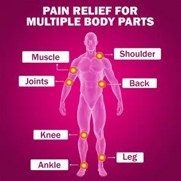

Bodypains(Muscle Pain):

Muscle pain that affects a small part of your body is usually caused by overuse -- sore arms from lifting boxes all day, for example. Or it could be a minor injury, like a bruised shoulder after a fall. But when you ache all over your body, it’s more likely caused by an infection, illness, or medicine you’ve taken.
Causes :
Many things can cause muscle pain, including: